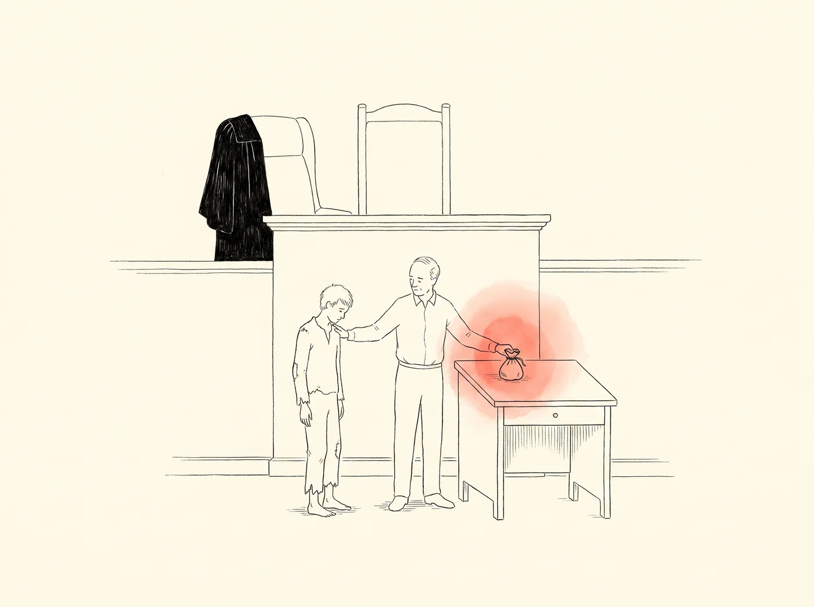

なぜキリスト教なのか
上っていく宗教、降りて来られた神
善い人なのか？
どう洗われる？
何があるのか？
だれもが心に抱いて生きている問いです。宗教ごとの答えを同じものさしで、率直に比べてみます。論争に勝つための文章ではなく、先に出会った良い知らせを分かち合うための文章です。
すべての宗教は同じことを言っているのでしょうか？

両方とも間違っていることはあっても、両方とも正しいことはありえません
（クルアーン 4:157）
四つの問いで比べてみる閉じる
神はどのような方か？
- キリスト教人格をもつ唯一の神（父・子・聖霊）
- イスラム教人格をもつ唯一の神。三位一体ではない
- ヒンドゥー教多くの神々と、その奥にある究極の実在ブラフマン
- 仏教世界を造った創造主を立てない
イエスとはだれか？
- キリスト教人となられた神
- イスラム教偉大な預言者。神ではない
- ユダヤ教待ち望んだメシアではない
- ヒンドゥー教多くの師や化身のうちのひとり
死の後は？
- キリスト教一度死に、復活と審判
- イスラム教一度死に、復活と審判
- ヒンドゥー教業によって生まれ変わる（輪廻）
- 仏教輪廻。涅槃に入れば終わる
「わたし」とは何か？
- キリスト教神が造られた、永遠に続く人格
- ヒンドゥー教真の自己（アートマン）はすなわちブラフマン
- 仏教変わらない自己はない（無我）
- イスラム教神が造られた被造物。復活のときに再び生きる
いちばん大切な問いについて、宗教はそれぞれ違う答え、ときには正反対の答えを出します。ですから「すべての宗教は正しい」という言葉は寛容に見えても、実はすべての宗教に向かって「あなたがいちばん大切にしているその言葉は間違っている」と言っていることになります。互いを本当に尊重するなら、違うものを違うと率直に言うところから始めるべきです。
人はどうやって神のもとへ行こうとするのでしょうか？
答えがもっとも大きく分かれるのは、ここです。


方法は違っても、向きは同じです — 上へ
けれども正直に問わずにいられません。どこまで上れば十分なのでしょう。昨日より良い今日を生きても、心の奥の恥は自分の力では消えません。
二つの道を詳しく · 宗教ごとに見る閉じる
① 神と取引する。「これだけ祈り、断食し、ささげ、善く生きれば、神も報いてくださるだろう」。けれども、どれだけ載せれば足りるのか、天秤がどちらに傾くのかは、最後までわかりません。
② 自分で登る。苦行し、修めに修めて悟り、抜け出そうとする道です。結局は、人が高いところにたどり着こうとすることです。
仏教
- 問題
- 執着と無知から来る苦しみ、終わりのない輪廻
- 目標
- 涅槃。苦しみと輪廻が終わること
- なすこと
- 八つの正しい道（八正道）、戒律、瞑想。ブッダは最後に「自らを灯火とせよ」と語りました
儒教
- 問題
- 徳が足りず、心が正しくないこと
- 目標
- 君子、聖人。救いというより人としての完成に近いものです
- なすこと
- 身と心を修めること（修身）、礼を守ること、学ぶこと
ヒンドゥー教
- 問題
- 業（カルマ）に縛られて繰り返される生
- 目標
- 解脱（モークシャ）
- なすこと
- 祭祀と務めを果たす行為の道、知恵の道、苦行、献身（バクティ）の道。献身の道では神の恵みも語られます
イスラム教
- 問題
- 神を忘れ、従わないこと
- 目標
- 審判を経て楽園に入ること
- なすこと
- 信仰告白、一日五回の礼拝、喜捨、断食、巡礼（五行）。審判の日に行いを天秤で量ると教えます（クルアーン 7:8–9）
ユダヤ教
- 問題
- 神のみこころに従わないこと
- 目標
- 神と結んだ契約の中にとどまること
- なすこと
- 律法を守り、背いたときには立ち返ること（テシュバ）
浄土仏教
- 問題
- 末法の世で、人の力では悟れないこと
- 目標
- 阿弥陀仏の極楽浄土に生まれること
- なすこと
- 阿弥陀仏の名を称え、その本願を信じること（他力の信仰）
キリスト教
- 問題
- 罪。すべての人が神から離れ、さばきのもとにいる
- 目標
- 神とふたたびつながること、永遠のいのち
- なすこと
- 救いは100%神がなさいます。人が付け加えるものはなく、神がすでになさったことを信仰によって受け取るだけです。その信仰も手柄ではなく、贈り物を受け取る空っぽの手です
点の位置は、それぞれの宗教の代表的な教えをもとにしたおおよその位置です。より深く知るには、それぞれの宗教の経典と信者の説明に耳を傾けてください。
ところが、逆さまの物語がひとつあります
人が上っていくのではなく、神が降りて来られたという話です。

天の座から、いちばん低いところまで
降りて来られたとはどういうことか閉じる
人が上っていくのではなく、神が降りて来られました。王宮ではなく馬小屋へ、主人ではなくしもべとして、栄光の座ではなく罪人がかけられる十字架にまで。
ほかの宗教にも、神が地上に降りて来る物語はあります。ヒンドゥー教の化身（アヴァターラ）がそうです。しかしその神々は王子や英雄として来て、悪を打ち倒します。いちばん低いところで、罪人の身代わりに死ぬために来られた神は、キリスト教にしかありません。

「雇い人の一人にしてください…」と言い終える前に、父が先に走り寄りました
イエスが語られたたとえ閉じる
財産を使い果たして帰って来る息子は、道すがら言うことばを練習します。「雇い人のひとりとして使ってください」。働いて返そうという、上っていく道です。ところが父は、そのことばを聞く前に遠くから息子を見つけ、自分から駆け寄って抱きしめます。
ただ赦してくださればいいのでは？
放蕩息子の父は、何の代価も求めずに息子を抱きしめました。それなら神も、ただ赦してくださればよいのではないでしょうか。なぜ十字架でなければならなかったのでしょう。

裁判官は法服を脱いで降りて来て、息子の罰金を代わりに払いました。十字架とは、このことです
そして十字架で死なれたイエスは、三日目によみがえられました。神話ではなく、時と場所のある歴史です。
裁判官の話・罪の代価・復活の証拠閉じる
聖書は、すべての人が罪を犯した（ローマ 3:23）、罪の報酬は死である（ローマ 6:23）と語ります。罪はいくつかの失敗ではなく、神から離れた心です。聖なる神は、それを見て見ぬふりはなさいません。
だれかがわたしの家族を傷つけたのに、裁判官が「かまわない」と言って放免したら、それを愛と呼ぶことはできないでしょう。ただ覆い隠せば正義が崩れ、そのまま罰すれば愛の居場所がありません。
法は守られ、息子は自由になりました。正義と愛が、ともに成し遂げられたのです。キリスト教は、十字架とはまさにこういうことだと語ります。
赦された過ちの代価はどこへ行くのか
仏教業は自分で償います。そのために幾度もの生を経ます。
物語ではなく、起きた出来事
キリスト教はこれを神話やたとえとして語りません。時と場所のある出来事なので歴史として確かめることができ、キリスト教はその出来事にすべてを懸けています。
そして、その方は三日目によみがえられました。墓は空で、よみがえったイエスを五百人以上の人が同時に見ました。パウロはこれを出来事から二十年ほどのちに書き、「その大部分は今も生きている」と書き添えました（一コリント 15:6）。尋ねて確かめてみよ、ということです。恐れて隠れていた弟子たちは、この知らせを伝えて命を差し出しました。人から聞いたことを信じて死ぬ人はいても、自分の目で見たと言うことがうそだと知りながら、そのために死ぬ人はいません。
キリスト教は排他的なのでしょうか？
神ご自身が代価を払われた道なら、道はひとつです。

ただひとつの道、けれどもいちばん広い門
なぜいちばん広い門なのか閉じる
まず率直に認めます。排他的だと感じられてきたのには、クリスチャンの冷たいことばや振る舞いも一因でした。それはイエスの姿ではありませんでした。申し訳なく思います。
イエスは「わたしは道であり、真理であり、いのちである」（ヨハネ 14:6）と言われました。道がひとつだという言葉は狭く聞こえます。けれども入るための条件を見ると、違って見えてきます。善行や苦行の門では、そのための力と時間のある人が先を行きます。恵みの門は、何の資格も問いません。罪を犯した人も、遅れて来た人も、死を目前にした人も、同じ門から入ります。十字架のかたわらの強盗もそうでした（ルカ 23:43）。
線を越えて、自分から訪ねて行かれた方
彼らはだれだったのか閉じる
異なる民族、異なる信仰の人、占領軍の将校、民族を売った者と後ろ指をさされた徴税人、死刑囚。イエスは当時の人々が引いた線を越えて、自分から訪ねて行かれました。

出口がひとつしかないなら、それを知らせるのが愛です
なぜ伝えるのか閉じる
非常口を知っている人が「こちらです！」と叫んだら、わたしたちはその人を傲慢だとは言いません。クリスチャンがイエスを伝える心も、勝とうとする心ではなく、ともに生きたいと願う心でなければなりません。

扉を壊さず、たたかれる方
心を開かれる方閉じる
イエスは扉を壊して入って来られません。剣や恐れによってではなく、みことばによって呼ばれます。そして、閉ざされた心を開かれるのも主です。パウロの話を聞いていたルデヤについて、聖書は「主は彼女の心を開かれた」と語ります（使徒 16:14）。ですからクリスチャンは、無理に信じさせようとはせず、ほかの信仰をもつ隣人に穏やかに、敬意をもって接するべきです（一ペトロ 3:15–16）。
それでも残る問い
神が愛なら、なぜ世界に苦しみがあるのか？閉じる
この問いのすべての答えを知っているとは言えません。けれども、キリスト教の神は苦しみを遠くから見下ろしているだけの方ではありません。ご自身がその中に入って来られ、裏切られ、打たれ、十字架で死なれました。そしてよみがえり、苦しみと死が最後のことばではないことを示されました。聖書は、神がすべての涙をぬぐい、もはや死も悲しみもない日が来ると約束しています（黙示録 21:4）。
福音を聞いたことのない人はどうなるのか？閉じる
その人たちのことは、もっとも公正な裁き主である神にゆだねます（創世記 18:25）。聖書は、神が造られた世界と人の良心を通して、すべての人に語ってこられたと言います（ローマ 1:20、2:15）。そして一つのことは確かです。これを読んでいるあなたは、もう聞きました。
ひとことで言えば
ほかの道は言います
「こうすれば神に届く」
キリスト教は言います
「神はすでに
あなたのもとに来られた」
はじめの三つの問いに
信じなさいと急き立てはしません。その方が歩まれた道を、ゆっくりたどって歩いてみてください。その道で、先にあなたを探しに来られた方に出会うでしょう。
信じてはじめてわかること
「まずわかってから信じよう」という言葉は、理にかなっているように聞こえます。けれども実際の生活では、逆のことがたくさんあります。信じて一歩踏み出してはじめてわかることです。
目をつぶって信じなさいということではありません閉じる
泳ぎを習う人は、どこにでもやみくもに飛び込むわけではありません。そばにコーチがいて、ほかの人が浮くのを見たから、身をゆだねるのです。十分な理由のある信頼です。
キリスト教の信仰も同じです。時と場所のある歴史上の出来事、いのちを懸けて証言した人々、ここまで比べてきた物語が、その理由です。その上で一歩踏み出せば、その先は頭ではなく生き方を通してわかっていきます。そして知るほどに、信仰はさらに深まります。
ですから、すべてわかってからではなく、今日の一歩で十分です。
その一歩とは？
聖書はその一歩をこう語ります。「悔い改めて福音を信じなさい」（マルコ 1:15）。
これも、わたしが積む功績ではありません。立ち返る心も、信じる心も、神が与えてくださいます。いま心が動いているなら、それこそ神が呼んでおられる声です。
降りて来られた神は
人々をひとつの家族に集められました
イエスを信じることは、ひとりで歩く道ではありません。その道には教会があります。
教会はどのように始まったのでしょうか？

五旬祭（ペンテコステ）、聖霊が来られた日に教会が生まれました
- 召しガリラヤで十二人の弟子を呼び、そばに置かれました（マルコ 3:14）場面 →
- 約束「わたしはこの岩の上にわたしの教会を建てる」（マタイ 16:18）
- 代価十字架で教会のためにご自身をささげ、よみがえられました（エフェソ 5:25）場面 →
- 待つこと天に昇られるとき「聖霊を待ちなさい」と言われました（使徒 1:4–8）場面 →
- 誕生五旬祭に聖霊が来られ、その日三千人が洗礼を受けました。最初の教会です（使徒 2:1–41）
- 広がりエルサレムからユダヤとサマリアへ、そして地の果てまで（使徒 1:8）。その教会が今日、わたしたちの町にまで来ています
「教会」という言葉の意味閉じる
新約聖書が使う「教会」（エクレシア）という言葉は、「呼び出されて集まった人々」という意味です。ですから教会は、まず建物ではなく人です。礼拝堂は、その人々が集まる家にすぎません。
教会は、人が善意で作った集まりではありません。イエスが「わたしの教会」と呼んでご自身で建て、聖霊が来て息を吹き込まれました。
教会は何をするのでしょうか？

教会は建物ではなく人々、イエスのからだです
最初の教会はこう生きました閉じる
教会はイエスのからだです（一コリント 12:27）。頭であるイエスのみこころに従い、その手足となって、この地でイエスの働きを続けていきます。洗礼はキリストのものとされ、この家族に加えられたしるしであり、聖餐は十字架を覚えつつ、信仰によってキリストの恵みを受ける食卓です。
ひとりでしっかり信じていればいいのでは？

火から離れた炭は、ひとりで冷えていきます
その言葉に、イエスは心を痛められます
教会はイエスのからだです。教会を迫害していたサウロに、イエスは「なぜ教会を迫害するのか」ではなく、「サウロ、サウロ、なぜわたしを迫害するのか」と言われました（使徒 9:4）。教会が痛めば、イエスが痛まれるのです。
イエスは教会のためにいのちをささげられました（エフェソ 5:25）。いのちを懸けて愛された家族を前に「わたしには必要ありません」と言うなら、そのお心はどれほど痛むでしょうか。
十字架の前の晩、イエスの祈りはこうでした。「父よ、彼らが皆ひとつになりますように」（ヨハネ 17:21）。
からだから離れた指は、どれほど健康でも長くは生きられません。信仰も同じです。ひとりきりの信仰は冷めやすく、道に迷いやすいものです。神はわたしたちが互いを通して成長するように造られました。
教会で傷ついたことがあるなら閉じる
もしそんなことがあったのなら、本当に申し訳なく思います。教会も人の集まりなので、過ちを犯し、ときには深い傷を負わせてしまいます。
けれども教会は、完璧な人の展示場ではなく、癒やされていく人の病院です。イエスは「健康な人に医者はいらない。いるのは病人である」（マルコ 2:17）と言われました。病んだ者どうしが集まって同じ医者に癒やしていただく場所、それが教会です。
傷つけた人のために、イエスからまで離れないでください。健やかな教会をもう一度探せばよいのです。その方法を下に書きました。
本物はどう見分けるのでしょうか？

本物の真珠は、傷から生まれた宝石です
教会のそばには、教会をまねたものもあります。ここで言う「偽物」とは、ほかの宗教のことではなく、キリスト教の名を借りて、イエスを違ったふうに伝える教えのことです。貴いものには、まねるものが現れるものです。道ばたの石をまねる人はいませんが、偽札は本物のお金だけをまねます。だから本物をよく知れば、偽物は見分けられます。
偽物はなぜ生まれるのか閉じる
キリスト教の名を借りた教えは、ほとんど決まって「恵みだけでは足りない」と言って何かを付け加え、ふたたび「上っていく道」へと引き戻します。
本物の真珠は、歯でこするとざらりとします。本物の福音も、はじめはざらりとします。「あなたは自分で自分を救うことはできない」という言葉から始まるからです。けれどもその中には、代わりに傷を負ってくださった愛があります。
どんな教会に行けばよいのでしょうか？

健やかな教会は近くにあり、その扉は開かれています
はじめて行くには
- 家の近くの教会を二、三か所探してみてください。名前と教団を確かめます。
- 日曜日（主日）の礼拝に、そのまま行ってみてください。後ろの席に座ってもかまいません。だれでもはじめはぎこちないものです。
- 初めての方のための案内を受けてみてください。気になることは何でも尋ねてかまいません。
- 何週か通いながら、上の O・Xで確かめてみてください。
- 小さな集まり（小グループ）に加わって、ともに歩んでください。そこで教会が家族になります。
異端が心配なら閉じる
道で「アンケートにご協力ください」「心理テストをしてみませんか」「良い聖書の勉強会があります」と近づいてきて、どの教会なのかをはっきり明かさないなら、気をつけてください。はじめから教会の名前と教団を明かさないところは、避けるのが賢明です。
迷ったときは、近くの教会の牧師や、所属教団の窓口に尋ねてみてください。健やかな教会は、こうした質問を喜んで受けとめます。
あなたを待っている家族がいます
イエスはあなたをひとりで歩かせはなさいません。今度の日曜日、近くの教会の扉をたたいてみてください。
絵はAIで作り人の手で整えました · 聖書の言葉は新たに訳したものです
© SSSOFT